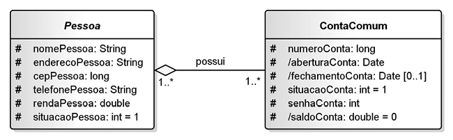
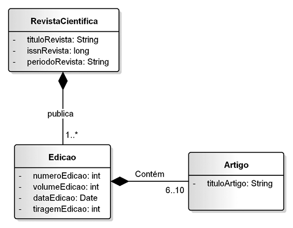
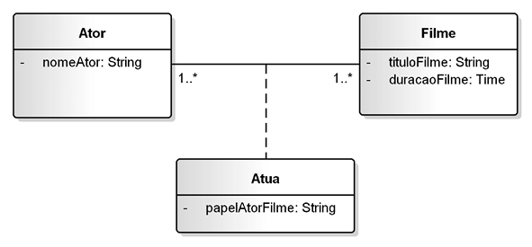
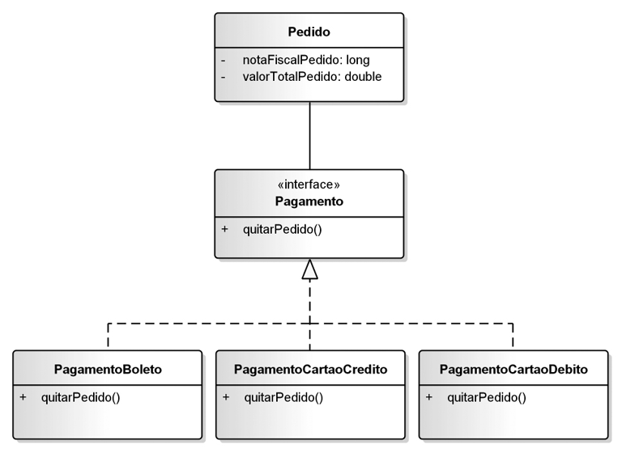
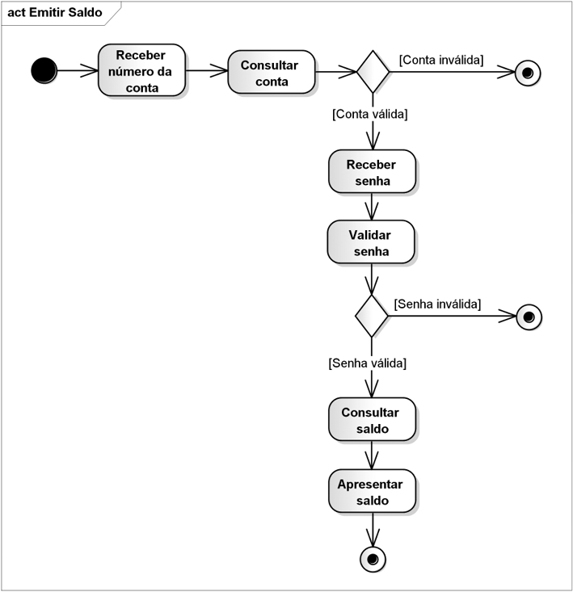
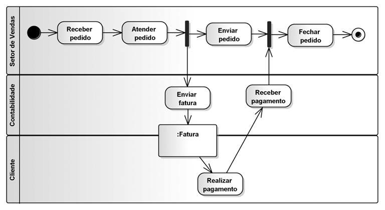

1. Diagrama de Classes em Detalhes: Agregação vs. Composição e Interfaces (Cap. 4)
O Diagrama de Classes detalha atributos (incluindo atributos derivados prefixados por / e restrições como {readOnly}), assinaturas de métodos e a semântica exata dos vínculos estruturais entre objetos:
Losango vazio junto ao Objeto-Todo. Os objetos-parte complementam o todo, mas possuem ciclo de vida independente (Fig. 4.10).

Losango preenchido junto ao Objeto-Todo. Vínculo exclusivo: se o Todo for destruído, suas Partes são destruídas em cascata (Fig. 4.11).

Armazena atributos que pertencem ao vínculo * para * (ex.: papelAtorFilme entre Ator e Filme).

A interface <<interface>> Pagamento define o contrato +quitarPedido() realizado por Boleto, Crédito e Débito.

2. Diagrama de Atividades: Decisões, Paralelismo (Fork/Join) e Raias (Cap. 10)
O Diagrama de Atividades modela fluxos de controle e fluxos de objetos através de Nós de Ação, Nós de Decisão com Condições de Guarda ([condição]), Barras de Bifurcação/União (Fork/Join) e Partições de Atividade (Swimlanes / Raias):
Fluxo com Decisões e Guardas (Fig. 10.7):

Partições (Raias) e Fork/Join (Fig. 10.19):

3. Código Python de Apoio (exemplo_classes_atividades.py)
class Edicao:
"""Objeto-Parte de RevistaCientifica e Objeto-Todo de Artigo (Composição - Fig. 4.11)."""
def __init__(self, numero_edicao: int, volume_edicao: int, titulos_artigos: List[str]):
self.numero_edicao = numero_edicao
self.volume_edicao = volume_edicao
# Composição forte: objetos Artigo instanciados e possuídos exclusivamente pela Edicao
self.__artigos: List[Artigo] = [Artigo(t) for t in titulos_artigos]
class Pagamento(ABC):
"""<> Pagamento (Figura 4.18 do livro de Guedes)."""
@abstractmethod
def quitar_pedido(self, valor: float) -> str:
pass
class PagamentoCartaoCredito(Pagamento):
def quitar_pedido(self, valor: float) -> str:
return f"Pagamento de R$ {valor:.2f} autorizado instantaneamente via Cartão de Crédito."